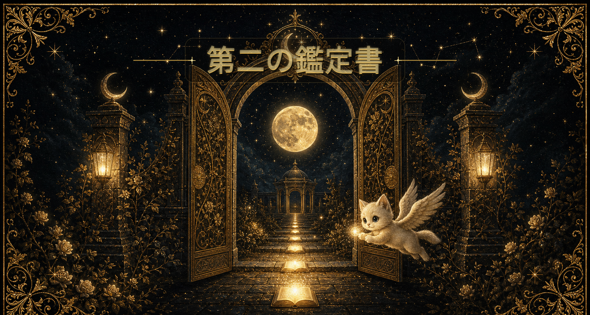

4つのしるし
この鑑定書では、7日間の日記を「PHOTO 写メに残したもの」「WORDS 何度も出てきた言葉」「THANKS 感謝できたこと」「NEXT 次に進みたい一歩」の4つから読み解きます。
完璧な文章でなくても大丈夫です。何気なく残した写真、ふと出てきた言葉、ありがとうと思えた出来事、少しだけ進みたい願い。その一つひとつが、今のあなたの現在地と、次に授かる流れを教えてくれています。
写メに残したもの
日常アイテムに映る、今の心の向き
写メの記録はまだありません
何度も出てきた言葉
本音や願いが集まりやすい場所
未来 / 自分 / 願い / 感謝
感謝できたこと
すでに受け取っている恵みの流れ
日記を書くと、感謝として残した言葉が表示されます
次に進みたい一歩
未来を育てる小さな開運アクション
日記を書くと、次の一歩として書いた言葉が表示されます
SECOND READING
月読み日記 第2の鑑定書
7日間の記録に宿った、月のしるしと次章への導き天命に生きるための鑑定書です。
この月読み日記でわかること
ひとつは
宿命への気づき
あなたの生まれ持つ宿の力と、今の日常とのギャップが少しずつ見えてきました。そのギャップに気づくことが、本来の自分を取り戻す最初の一歩になります。
ふたつめは
おかげさまに気づく感謝の芽
日々の小さな出来事の中に「ありがとう」を見つける視点が育つと、運気の流れはやさしく整っていきます。
みっつめは
客観視する力
自分の言葉を日記に置くことで、感情の流れを少し外から見られるようになります。それが「ぶれない自分」への道です。
4つのキーワード
新月の願いと7日間の記録がそろうと、ここにキーワードが表示されます。
今のあなたへ
記録を読み込み中です。
育ち始めた願い
記録を読み込み中です。
あなたの土台資質
宿曜情報を読み込み中です。
次の一歩へ
記録を読み込み中です。
育んだもの
7日間、よく歩きました。月読み日記を続けることで、あなたの中には3つの恵みが静かに育っています。
月は、お母さんの象徴でもあります。この日記は、月の光のようにあなたを急かさず、責めず、やさしく包みながら、本来のあなたを少しずつ育てていくために作りました。
ひとつは、宿命への気づきです。あなたの生まれ持つ宿の力と、今の日常とのギャップが少しずつ見えてきました。そのギャップに気づくことが、本来の自分を取り戻す最初の一歩になります。
ふたつめは、おかげさまに気づく感謝の芽です。日々の小さな出来事の中に「ありがとう」を見つける視点が育つと、運気の流れはやさしく整っていきます。
みっつめは、客観視する力です。自分の言葉を日記に置くことで、感情の流れを少し外から見られるようになります。それが「ぶれない自分」への道です。
届けたいもの
月読みワンダーランドが届けたいのは、宿命を知り、天命に近づきながら、感謝が自然に育つ毎日です。
宿命を知ると、自分への理解が深まります。感謝が育つと、人間関係と仕事の流れがやさしく整います。
月のサイクル
新月から始まり、上弦・満月・下弦を経てまた新月へ。7日ずつ、月と一緒に願いを育てていきましょう。気づいたこと、行動したこと、受け取ったことを書き残してください。
ふたご座新月から
山羊座満月への旅
ふたご座の新月に「言葉・好奇心・つながり」の種を蒔いて始まったこの7日間。昨日の山羊座の満月で、その旅は一つの頂きへとたどり着きました。何が芽生え、何が明らかになったかを、今ここで振り返りましょう。
ふたご座の新月に心に抱いた願い、言葉にしたこと。この7日間で、そのどれが少し動き始めましたか。蒔いた種はすでに土の中で育ちはじめています。
ふたご座は「言葉・知識・好奇心」の星座。日記の中で何度も出てきた言葉、ふと浮かんだひと言——それが今のあなたの本音です。もう一度読み返して、大切な言葉に丸をつけてみましょう。
満月は「今まで見えていなかったもの」を照らします。この7日間で「あ、これが本当のことだ」と感じた瞬間はありましたか。山羊座の光が見せてくれたその気づきが、次の28日間を歩く地図になります。
ふたご座新月から山羊座満月への旅で、「おかげさまだ」と感じた人・出来事・気づき。それを言葉にして、心の中に受け取ってください。感謝の回路が、次の豊かさを呼び込みます。
7日間の旅を経て、「もうここで終わっていい」と感じるものが見えてきたはずです。一つだけ名前をつけて、山羊座満月の光の下で静かに手放しましょう。手放すことが、次の旅の出発点になります。
🌕 満月の気づきを書き留める
山羊座満月から
次の新月まで
昨日の山羊座満月をピークに、月はこれから光を手放しながら下弦の月、そして次の新月へと向かいます。このフェーズは「整理・完結・準備」のとき。山羊座のエネルギーを借りて、着実に次のサイクルへの土台を築いていきましょう。
山羊座は「実際にやること」でエネルギーが動きます。7日間の気づきをもとに、「今週これだけはやる」と決めて書き留めてください。小さな一歩が、次の新月への流れをつくります。
このフェーズは「仕上げ」のとき。ずっとやりかけのこと、区切りをつけていいもの——一つだけ選んで丁寧に完成させましょう。完了させることで、次のサイクルで受け取る器が整います。
山羊座満月から下弦の月にかけては、余分なものを手放す絶好のタイミング。物でも、習慣でも、思い込みでも。一つだけ「もう手放す」と決めて、軽くなりましょう。空いた空間に次の使命への流れが入ります。
山羊座の力は「社会性・責任・宣言」。7日間で気づいたこと、次にやることを誰かに話してみましょう。声に出すことで自分への約束が固まり、山羊座のエネルギーが現実を動かし始めます。
次の新月がやってくるとき、あなたはまた新しい種を蒔きます。今の「手放しと完了」の時間が、その願いをより純粋にしてくれます。日記を次のサイクルへつなぎながら、月のリズムとともに歩み続けましょう。
▸ 日記データのバックアップ・復元
なぜバックアップが必要？
月読み日記の記録はこのブラウザ（Chrome・Safariなど）の中に保存されています。
ブラウザの「履歴を消去」や「キャッシュ削除」を行うと、日記データが消えてしまう場合があります。
また、別のパソコンやスマートフォンでは同じデータが見えません。
📥 書き出し：日記データをJSONファイルでダウンロード。大切な場所に保存しておいてください。
📤 復元：以前ダウンロードしたJSONを読み込んでデータを元に戻します。
↓ 画面下のナビゲーションバーから操作できます。
💡 運営の方へ：お客様からデータ復元の相談があったとき
【お客様への案内手順】
- 「以前のブラウザ・端末にバックアップファイル（.json）が残っていますか？」と確認する
- 残っている場合 → 上の「バックアップファイルを選んで復元」から読み込んでもらう
- バックアップがない場合 → スプレッドシートのデータからCSVで復元可能（かのんへ連絡）
- スプレッドシートにもない場合 → 日記の再入力をご案内（申し訳ないですがご本人に再記入いただく）
※ localStorageはブラウザごとに独立しているため、別ブラウザ・別端末への「移行」はJSONファイルの書き出し→読み込みで対応できます。
MOON PHASE TRACKER
月のフェーズ
48のしるし
月と共に歩んだすべての記録。
ひとつひとつのしるしが、あなたの月の旅を証明します。
| 月 | 🌑 | 🌓 | 🌕 | 🌗 |
|---|
あなたの物語は、ここで終わりではありません。
次の7日間には、今回見つけた「自分の歩幅」を現実へ育てる月の流れが待っています。
次のフェーズの扉をひらきましょう。